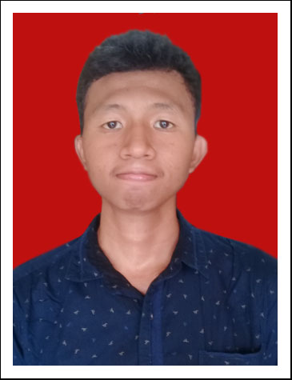
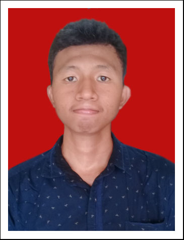

Curriculum Vitae Ahmad Farhan
Nama lengkap saya adalah Ahmad Farhan dan saya di tahun 2020 ini telah berumur 20 tahun. Saya tidak memiliki penyakit berat atau dengan kata lain sedang dalam kondisi kesehatan yang baik. Saya memiliki ketertarikan pada dunia teknologi informasi, komunikasi dan perpustakaan, oleh karena itu saya memiliki beberapa kemampuan dalam bidang tersebut seperti menginstal dan mengoperasikan perangkat lunak (seperti sistem operasi dan aplikasi lainnya). Selain itu saya juga mampu berbahasa Inggris dan Arab meskipun kurang fasih. Saat ini saya sedang menempuh pendidikan program studi S1 Ilmu Perpustakaan di Universitas Islam Negeri Syarif Hidayatullah Jakarta. Meskipun saya kurang lancar dalam berkomunikasi, tetapi saya berusaha menjadi orang profesional ketika dalam pekerjaan baik individu maupun kelompok.